Differential Expression and the Mouse Gut-Brain Axis
Introduction
This module provides data for an independent project exploring differential expression in RNA-seq data.
This activity will walk through differential expression analysis and use bioinformatics tools (R) to understand how gut bacteria (the gut microbiome) can influence the expression of genes in the brain (the gut-brain axis). You will work with real data from a mouse RNA-seq experiment.
The basic steps of your analysis are:
Identify mouse genes of interest for your project.
Characterize the gene expression of your genes of interest in the dataset.
Explore differential gene expression in the control vs experimental group.
The original study
The original study, Human Gut Microbiota from Autism Spectrum Disorder Induces Behavioral Deficits in Mice, was published in 2019 [1]. Gut microbiota are known to be different between individuals with ASD and individuals who are considered typically-developing. Additionally, some individuals with ASD also experience gastrointestinal symptoms, and their gut microbiota show the greatest difference when compared to the gut microbiota of typically-developing individuals. Some researchers have proposed that gut bacteria can influence some of the symptoms of ASD. The relationship between the intestinal microbiome and the development and function of the human brain is known as the gut-brain axis.
In this study, researchers explored whether they could induce ASD-like behaviors in mice by changing their gut microbiome. Mice in this experiment received fecal transplants. Some mice received transplants from humans who have been diagnosed with ASD, while other mice received transplants from humans who did not have any diagnosis (control). This allowed researchers to control the composition of the gut microbiome in each mouse. They discovered that colonization with gut microbiota was enough to induce ASD-like behaviors in the mice. They also let the mice breed and collected gene expression data from the brains of their offspring to explore whether changing the gut microbiota could result in changed gene expression. In particular, they discovered that the offspring of mice who received stool from ASD donors showed different gene splicing and expression profiles of certain ASD-relevant genes.
Note
It is important to note that researchers are not suggesting that ASD is entirely induced by gut bacteria. There is a strong genetic component to ASD. Scientists have known for years that there are both genetic and environmental components to the development or severity of some ASD symptoms. This research explores one possible environmental component.
You can read the original research paper here.
The Gut-Brain Axis
The gut-brain axis is the term used for the proposed connection between the gut microbiome and the brain. In recent years, studies have identified links between neurological symptoms and the presence of intestinal inflammation. There are around 100 million neurons in the human gut, and around 70% of the serotonin (an important neurotransmitter) in the human body is made in the gut. Communication between the microbes in the gut and the brain happens through multiple routes, including immune signaling (signals sent to the brain by immune cells), stimulation of the vagus nerve, and activation of the enteric nervous system (a system of neurons in the intestinal that are often called the “second brain”) through formation of microbial-derived metabolites like tryptophan, short-chain fatty acids, or secondary bile acids.
In the figure above, the “up” arrow indicates an increase; this could be increased production of a protein, increased activity of a biological pathway, or a general increase in the presence of a structure. The “down” arrow indicates a decrease.
Researchers have identified multiple ways the intestinal microbiota in the gut might remodel the structure of the nervous system. This includes changes in myelination, neurogenesis, neurotransmitters and synaptic plasticity, growth of dendrites, activation of microglia, and changes in the permeability of the blood-brain-barrier. The exact mechanism for these changes is still unknown.
Note
Why are the neural processes mentioned above important?
myelination: the process of forming protein sheaths (called myelin) around the long axons of nerves. This insulates the axon and improves the speed and efficiency of transmission of neural signals.
neurogenesis: the formation of new neurons, particularly in the adult central nervous system. This is important for memory and learning.`
synaptic plasticity: the process of strengthening or weakening connections at the synapse of nerves (where the signal is transferred from one nerve to another). This sort of adaptive change is fundamental for memory and learning, but also helps with recovery after injury.
dendritic growth: the process by which neurons form new branches (dendrites) and spines (small protrusions on the dendrites). This is a key aspect of synaptic plasticity and is essential for brain development, learning, and memory formation.
microglia: immune cells found in the central nervous system. They support central nervous system development and synaptogenesis (formation of new synapses), maintain homeostasis, contribute to an immune response against infectious agents, and are associated with adult neurogenesis, neuroinflammation, degenerative diseases, stroke, trauma and regeneration.
blood-brain-barrier: a highly selective semi-permeable barrier located in the central nervous system that separates the bloodstream from the fluid that surrounds the brain. It maintains a stable environment for neuronal function and regulates passage of molecules between the brain and the rest of the body.
Remodeling of the nervous system via the gut microbiome is suspected to be responsible for the severity of some symptoms associated with neurodevelopmental and neurodegenerative disorders. A possible link between the gut microbiome and increased symptom severity is actively being studied for Major Depressive Disorder, Autism Spectrum Disorder, fibromyalgia, migraines, Parkinson’s disease, Alzheimer’s disease, and more.
The samples in this dataset are from mice that do not carry genes associated with either neurodevelopmental or neurodegenerative diseases. Instead, any symptoms or changes in the brain they show are the result of microbes introduced to their gut via fecal transplant. This dataset gives you the opportunity to study possible effects of the gut-brain axis firsthand.
Deciding on your research question
The data for this activity includes gene expression data from two different brain regions (striatum and prefrontal cortex) in mice. Additionally, there are two different types of mice. Some of the mice are an Autism Spectrum Disorder-type (see below for details), while others are control-type.
Before you start working with the dataset, you will need to make some decisions about the questions you want to answer.
Are you interested in exploring gene expression differences between two regions of the mouse brain, without focusing on the gut-brain axis? Expand this section to read more.
Brain Structure: The Striatum and the Prefrontal Cortex
This dataset includes gene expression data from two different regions in the brain: the striatum and the prefrontal cortex.
The striatum is part of the brain involved in motor control and cognitive tasks like reward processing, decision-making, and social interactions (often called executive functions). It lies deep within the center of the brain and is composed of both gray matter (which can be thought of as the “processing” part of brain tissue) and white matter (which is the brain structure involved in transporting messages); the combination of the gray and white matter give this region of the brain a striped appearance, resulting in the name “striatum”. The striatum is involved in both reflexive movement - that is, involuntary movement that happens as an immediate response to a stimulus - and slower, planned movement like walking. In Parkinson’s disease, some patients experience degeneration of parts of the striatum, resulting in spastic, uncontrollable movement.
The prefrontal cortex is the part of the brain that is primarily in charge of decision making, reasoning, personality, maintaining social appropriateness, and other complex behaviors that fall under the umbrella of executive functions. This can include planning, self-control, and working towards long-term goals. The prefrontal cortex is located in the very front of the brain, just behind your forehead. One of the most famous brain injury patients was Phineas Gage, a railroad worker who survived an iron rod through his forehead. His prefrontal cortex was destroyed in this accident, and doctors noted huge behavioral and personality changes. You can read more about his case here.
Are you interested in exploring neurodevelopmental disorders? These are disorders that are the result of altered brain development. Although this dataset was created using “ASD-type” mice, many neurological disorders have shared symptoms and probably share a biological basis. Expand this section to read more.
Brain Disorders: Neurodevelopmental Disorders
Although the following disorders can be diagnosed at any age, they are considered neurodevelopmental disorders because symptoms usually show up within the first two years of life. Many of these disorders have overlapping symptoms, including difficulty managing emotions, experiencing intense emotional outbursts, a dysregulated stress response system, difficulty with executive functions (like attention regulation, organization, and planning), and issues with social communication and unspoken social norms. Many of these disorders have similar biological roots, such as neuroinflammation, genetic variation, and disruptions in systems that rely on dopamine, norepinephrine, and serotonin (which can cause impaired connections between regions of the brain, called white matter connectivity). People with these disorders also show differences in brain regions like the prefrontal cortex and the amygdala compared to people without neurodevelopmental disorders. For example, malfunctioning of the hypothalamic-pituitary-adrenal (HPA) axis is common in neurodevelopmental disorders. The HPA axis regulates the brain and body’s response to stress. Many people with neurodevelopmental disorders show an unusually strong reaction to stress and can have difficulty recovering from it.
This is not a comprehensive list of all neurodevelopmental disorders - you may know of others that are not included! Any of these could be a good starting point for your research question.
Autism spectrum disorder (ASD) is a neurological disorder that affects behavioral and social interactions, among other things. Individuals diagnosed with ASD can experience a wide range of symptoms, including differences in social behaviors and communication styles, as well as intellectual disabilities and physical issues like sensory sensitivities or gastrointestinal problems. Some genes that have been suggested as ASD risk genes include SHANK3, NRXN1, CHD8, ARIH2, ZDHHC15, and TRPC6. Individuals with ASD also show changes in both white and gray matter volume, as well as an imbalance in connectivity of neural circuits (there are more connections and stronger connections than typical within local regions of the brain, and both fewer and weaker connections between distant regions of the brain). The neural circuits that are imbalanced connect brain regions like the prefrontal cortex and the amygdala.
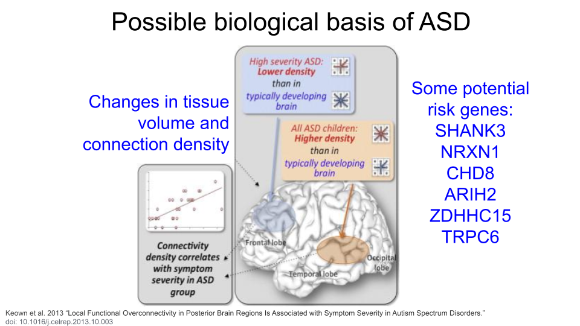
Attention-Deficit/Hyperactivity Disorder (ADHD) is characterized by difficulties with inattention, hyperactivity, and impulsivity. Individuals may show predominantly inattention symptoms (predominantly inattentive ADHD), predominantly hyperactivity and impulsivity symptoms (predominantly hyperactive ADHD), or a combination of all (combined type ADHD). Some proposed ADHD risk genes are SKI, ZNF544, ST3GAL3, and PEX2. Additionally, researchers believe alterations to the prefrontal cortex and the dopaminergic system are major contributing factors for ADHD.
Learning Disorders (LDs) include disorders such as dyslexia, dyscalculia, and dysgraphia. Each of these is characterized by difficulty developing a fundamental academic skill, including reading (dyslexia), math and working with numbers (dyscalculia), writing (dysgraphia), listening (auditory processing disorder), speaking (language processing disorder), or non-verbal reasoning (nonverbal learning disorder). Individuals with LDs frequently show differences neural connectivity within brain regions like the prefrontal cortex, hippocampus, and parietal lobes, which may contribute to decreased brain processing speed and executive functioning. Research also suggests that altered tryptophan metabolism is associated with LDs.
Mood Disorders are a group of disorders in which affected individuals exhibit emotional state changes, which can include episodes of deep sadness (dysphoria), lack of feeling anything (anhedonia), and extreme happiness or euphoria (hypomania or mania). The most well-known of these disorders are Major Depressive Disorder (MDD) and Bipolar Disorder (BD). Some individuals with Schizoaffective Disorder or Schizophrenia (SCZ) also experience hallucinations and psychosis. Variation in serotonin transporter genes and dopamine receptor genes have been associated with Mood Disorders, as well as neurotransmitter alterations and brain circuit dysfunction, particularly within the prefrontal cortex and the limbic system (where the amygdala is).
Mood disorders like depression, bipolar, and schizophrenia are not currently listed as neurodevelopmental disorders in the American Psychiatric Association’s Diagnostic and Statistical Manual of Mental Disorders, Fifth Edition (DSM-5). This is the official handbook of psychiatric disorders used for diagnosis in the field. However, researchers have suggested that mood disorders should be considered neurodevelopmental disorders due to growing evidence that neurodevelopmental pathways play a role in their development and manifestation. For the purposes of this module, we have included them in the “Neurodevelopmental Disorder” section.
If you’d like to read more about the biology of neurodevelopmental disorders, (Bertollo et al. 2025)[https://www.mdpi.com/2076-3425/15/3/307] is a great starting point!
Are you interested in exploring neurodegenerative disorders? These are disorders that that occur when brain structures and systems experience degradation and may be the result of similar biological processes that cause neurodevelopmental disorders. Expand this section to read more.
Brain Disorders: Neurodegenerative Disorders
Neurodegenerative disorders are usually considered diseases of aging because a person’s risk of developing one of these disorders increases as they age. These disorders are the result of the breakdown and eventual loss of neurons and synaptic connections. An individual’s specific symptoms and diagnosis are the result of where in the brain or central nervous system the breakdown of neurons and synapses occur. Although the symptoms and progression may differ between diseases, the biological basis is generally one of seven things: a genetic mutation, accumulation of misfolded proteins, excitotoxicity (overstimulation of glutamate receptors, ultimately causing cell death), loss of regulatory function of noncoding RNAs (causes biological processes to break down), oxidative stress, mitochondrial dysfunction, or neuroinflammation (when the immune system attacks and damages the neurons).
This is not a comprehensive list of all neurodegenerative disorders - you may know of others that are not included! Any of these could be a good starting point for your research question. Remember that this is a gut-brain axis dataset, so you should verify that disorders that are not on this list do have an association with changes in the gut microbiome first.
Alzheimer’s Disease (AD) is the leading cause of dementia in seniors and is marked by progressive decline in memory, cognition, and behavior. It generally begins as a result of neuron loss in the hippocampus, or the region of the brain responsible for episodic memory. Beta-amyloid plaques and clumps of tau proteins are deposited on nerve cells, which prevents normal nerve impulses from traveling between neurons. This eventually leads to cell death and deterioration of brain tissue. Tau proteins are also present in normal brain tissue to stabilize microtubules and aid transport within neurons. They cause problems when they become damaged and detach from microtubules to form tangles, or clumps.
Parkinson’s Disease (PD) is a movement disorder of the nervous system. Over time, individuals with PD lose their ability to regulate and control fine motor movement, resulting in tremors, rigid muscles, slow movement (bradykinesia), and difficulties with balance and coordination. They can also show cognitive decline. These symptoms are the result of gradual deterioration of dopamine-producing neurons, specifically in an area of the brain called the substantia nigra. The substantia nigra is responsible for motor movement and has two parts - the pars compacta, which produces dopamine, and the pars reticulata, which uses GABA (another type of neurotransmitter).
Multiple Sclerosis (MS) is an immune-mediated neurodegenerative disorder. In MS, the immune system attacks the protective myelin covering around neurons in both the brain and the spinal cord, causing inflammation, demyelination (of loss of the protective myelin sheath), and damage to the underlying neuron. Eventually, these neurons become less efficient at passing electrical impulses to connecting neurons. Individuals with MS experience fatigue, numbness or tingling, difficulties with coordination, blurred or double vision, and memory and concentration issues.
Amyotrophic Lateral Sclerosis (ALS), also known as Lou Gehrig’s Disease, is caused by progressive degeneration of motor neurons in the brain and spinal cord. The exact mechanisms that trigger this degeneration are not known, but research has suggested that oxidative stress and mitochondrial dysfunction might contribute to the development of ALS. Additionally, the genes C9orf72, SOD1, TARDBP, and FUS have been identified as risk factors for developing an inherited form of the disease.
If you’re interested in reading more about the biology of neurodegenerative disorders, Gadhave et al. 2021 is a good place to start!
Refining your research question
Once you’ve picked brain structure, a neurodevelopmental disorder, or a neurodegenerative disorder to focus on, you’ll want to start identifying specific genes for your research project. The following questions could be a good starting point.
Is there a gene or set of genes linked to a biological process you’re particularly interested in? This could include things like “cytokines”, “anti-inflammatory genes”, “genes involved in building neurons”, or any biological process you find interesting!
Are there a known risk genes for your disease or disorder of interest (or genes that are protective against this disorder)? Remember, you don’t have to limit yourself to Autism Spectrum Disorder, either; there are many disorders that have a shared genetic and biological basis! If you decide to start here, check that researchers have linked the symptoms of your disease or disorder of interest to the gut microbiome.
Are you curious about the standard “housekeeping” genes that are broadly expressed across cell types and involved in common biological processes, like DNA replication, metabolism, and cell cycle regulation? These processes are vitally important for proper cellular function, so disruption in them can cause problems for the organism.
Once you’ve picked a disorder or cellular process that interests you, start looking up research papers to find genes! You can use sites like PubMed and Google Scholar to look up studies. Skim through at least 4-5 different papers that contain some type of gene name or a biological process. DO NOT GET TOO LOST INTO THE PAPERS! Make sure you skim through them for important information, but be willing to set a paper aside if you’re struggling to find what you need.
Identifying genes of interest with the Mouse Genome Informatics database
The Mouse Genome Informatics database that tracks mouse genes and expression data. A full introduction to everything available through the MGI can be found here. We’ll reproduce some of it below.
The mouse as a model organism
The mouse is the most commonly-used model organism in laboratory work. In fact, mice and rats make up 95% of the lab animal population, and more than 80% of the research that has been awarded the Nobel Prize for Medicine was done at least in part with mouse models [2], [3].
So what makes mice such good model organisms for biomedical research? Well, first, they’re economical and relatively easy to keep. Since mice are small, they don’t require a huge amount of space or food. They also have fast reproductive cycles, so researchers can study multiple generations within only a few years. Most importantly, though, mice and humans are both mammals and have about 85% of their protein-coding genome in common. As a result, mouse physiology is quite similar to human physiology. The mouse circulatory, reproductive, digestive, hormonal, and nervous systems are frequently used as models to study how humans grow, age, and develop chronic diseases. They are particularly important model organisms for cancer research and neuroscience.
You can find additional information about how the mouse is used in research here!
Mouse gene IDs
In this dataset, genes are identified using their Ensembl Gene ID code. Every gene has an ID that looks something like this:
ENSMUSG00000000001
ENS stands for “Ensembl”. Ensembl is a genome database project managed by the European Bioinformatics Institute. It’s one of several databases like this. Others include NIH’s National Center for Biotechnology Information (NCBI; the organization that manages GenBank and PubMed) and the University of California, Santa Cruz (UCSC) Genome Browser. When a gene code starts with “ENS”, it means you should look up the gene code in the Ensembl database.
MUS stands for “Mus”, which is the genus for the mouse.
G stands for “Gene”. When you see “G” in the ID name, you know you are working with a gene. There are also codes for transcripts (“T”), exons (“E”), and proteins (“P”).
00000000001 is the numerical code associated with the gene.
Picking your genes
The MGI allows you to look up information about genes you’re interested in but don’t know much about. This is particularly helpful if you are interested in genes that were identified in other research organisms or in previous studies. You could also start by looking up a human disease and associated human risk genes, then identify the homologous mouse genes.
Make sure you are recording the name and gene ID for the mouse! Gene names are often similar between mice and humans, but the gene IDs will be very different. If you don’t use the correct gene ID when exploring this dataset, you won’t get very far.
There are multiple ways to use MGI to find information about your mouse genes. Expand each box for detailed instructions.
Looking up genes based on human gene name
You may have identified a human gene that you’re interested in for your project, so you need to figure out what the mouse ortholog is and (more importantly) what the mouse Ensembl ID is. Luckily, the MGI allows you to search based on the human gene name.
Let’s say you’re interested in the human gene REG3A, pancreatic secretory protein that may be involved in cell proliferation or differentiation. We know from research papers that it also is upregulated as a result of pancreatic inflammation.
Open the Mouse Genome Informatics website. To look up information on this human gene, type “REG3A” into the “Quick Search” bar and press enter.
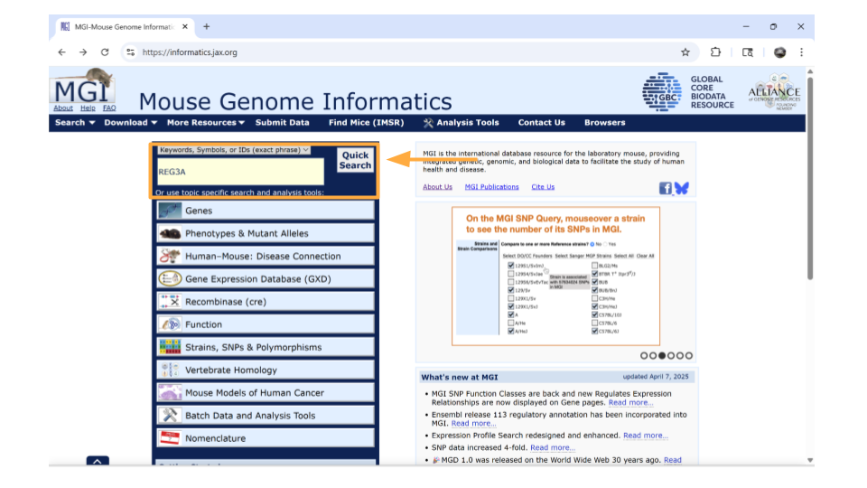
You’ll notice that MGI returns 3 possible mouse genes that are orthologs to the human gene REG3A. This is totally normal! Remember, orthologs are gene that shares the same ancestry. In this case, there was likely a gene duplication event in the mouse ancestor after it split off from the human ancestor.
You can pick whichever ortholog you like (or even pick all of them). For this example, we’ll choose the mouse gene “Reg3a”. Click on the gene symbol (in this example, Reg3a) to get more detailed information.
On the new page that you open, details about the gene are organized into familiar categories. But first, let’s take a look at the IDs on the right-hand side of the “summary” section. In particular, we’re interested in the NCBI link. Click this link.
We’re now on the NCBI page for the mouse gene Reg3a, which has the Ensembl ID for this gene. Copy this so you can later use it to look through the dataset!
Return back to the MGI page on the Reg3a gene. Down the left-hand side of the page, you will see sections about the chromosomal location, homology, gene ontology, expression data, and more. Most sections are expanded by default, but you’ll need to expand the “homology” section yourself.
Once this section is expanded, you can find information about possible human homologs to the mouse gene, including alternate names and where the human homolog is located in the human genome.
If you continue scrolling down the page, you can also examine the pathways and processes the gene product is involved in under the “gene ontology” section. Clicking on the blue squares takes you to a page with more information about how that particular gene was assigned to a pathway or molecular process.
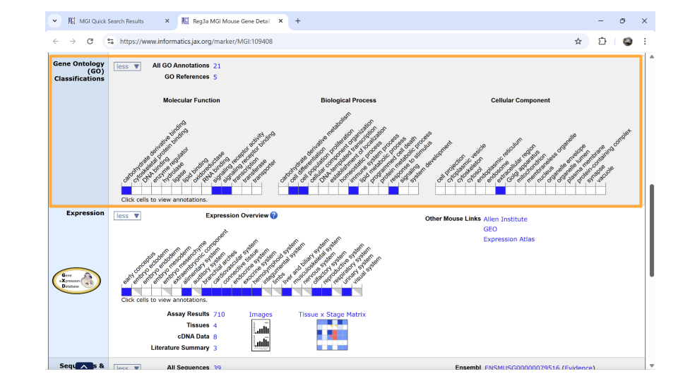
Directly underneath the “ontology” section is information about when the gene is expressed during development. You can learn more information by clicking on the blue squares, or by clicking on the links in the upper right-hand corner. These links will take you to other websites.
Looking up genes associated with a human disease
You may not know a particular gene that you want to explore in this dataset, but maybe you do have a human disease or condition that you’re interested in. You can look up mouse genes that might be associated with this disease in the MGI as your starting point.
Open the Mouse Genome Informatics website. Choose the tab that says “Human-Mouse: Disease Connection”.
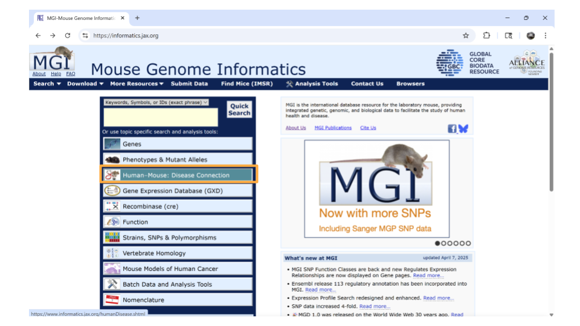
You’ll then want to choose “Disease or Phenotype Name” from the drop-down menu on the left and type the disease of interest into the search bar on the right. For this example, let’s look up “pancreatic inflammation”.
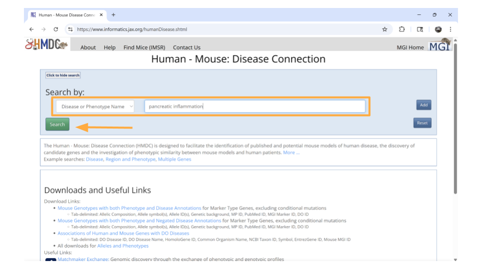
After a brief pause (in which you may see graphics of a human and mouse running on wheels), a new page will open that lists human genes associated with pancreatic inflammation, as well as the mouse orthologs for those genes. This graphic will also indicate the molecular function these genes are associated with. You can click on any of the mouse genes to explore further. Let’s click on the top hit, Abcb1a.
You should now be on a page that contains all sorts of information about the mouse gene Abcb1a. In the “summary” section up top, you can click on the NCBI ID to get the Ensembl mouse ID for this gene.
Specifically, you will find the Ensemble ID for the mouse gene Abcb1a under the “See Related” section. Copy this so you can later use it to look through the dataset!
Return back to the MGI page on the Abcb1a gene. Down the left-hand side of the page, you will see sections about the chromosomal location, homology, gene ontology, expression data, and more. Most sections are expanded by default, but you’ll need to expand the “homology” section yourself.
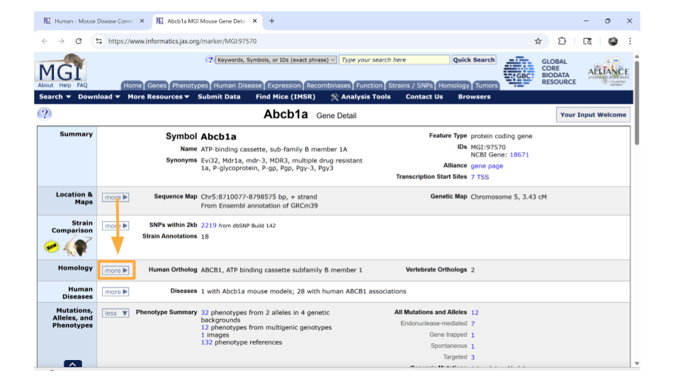
Once this section is expanded, you can find information about possible human homologs to the mouse gene, including alternate names and where the human homolog is located in the human genome.
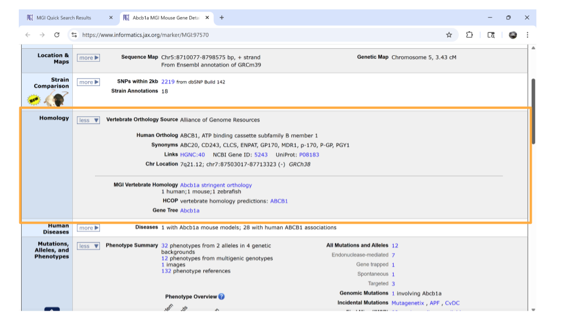
If you continue scrolling down the page, you can also examine the pathways and processes the gene product is involved in under the “gene ontology” section. Clicking on the blue squares takes you to a page with more information about how that particular gene was assigned to a pathway or molecular process.
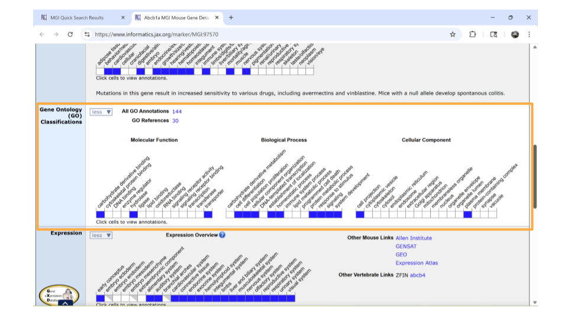
Directly underneath the “ontology” section is information about when the gene is expressed during development. You can learn more information by clicking on the blue squares, or by clicking on the links in the upper right-hand corner. These links will take you to other websites.
Now that you have your genes of interest, you’re ready to start working with the dataset.
Exploring the gene expression count data
Let’s start by looking at a dataset that includes information on how many times each gene was expressed in a sample. This is the gene expression count dataset.
This dataset gives us an idea of the scale of gene expression - for example, which genes are expressed the most? Which genes are expressed the least? This is particularly useful when you want to know if a gene is usually turned on or off in a sample.
Package Install and Load
We will need to install the tidyverse package for this activity.
Type the following into the SciServer console and press return to run the code.
install.packages("tidyverse")Next, we will load the package so it’s ready to use:
library(tidyverse)
Note
Packages are collections of R code, data, and documentation that extend the base functionality of R. Think of them like “expansion packs” on top of your basic R software.
Packages are developed by the R community and made available through repositories like CRAN (Comprehensive R Archive Network), Bioconductor, and GitHub. They are especially useful if you want to do a specialized kind of analysis, such as genomic analysis!
We use the library command to load and attach packages to the R environment. This means links the package you downloaded to your current session of R.
The “tidyverse” package that you loaded is useful for loading, wrangling, and exploring data.
Loading the gene expression count data
The gene expression count data for this project is stored online. R has the ability to load datasets from URLs with the tidyverse’s read_csv command. Let’s load the gene expression count data for the samples that come from just the control-type mice. This contains all the prefrontal cortex and striatum samples taken from control-type mice (so, two brain regions, only one mouse type).
Remember, R code always follows the same basic format! In this case, you are telling R to open the csv file that exists at a URL and save it as an object called “gutbrain_genes”.

You can load this dataset into R using this code.
gutbrain_genes <- read_csv("https://genomicseducation.org/data/mouse_gutbrain_de_counts_controls.csv")Rows: 55421 Columns: 59
── Column specification ────────────────────────────────────────────────────────
Delimiter: ","
chr (1): GeneID
dbl (58): SRR6652471, SRR6652507, SRR6652508, SRR6652511, SRR6652512, SRR665...
ℹ Use `spec()` to retrieve the full column specification for this data.
ℹ Specify the column types or set `show_col_types = FALSE` to quiet this message.When we load this dataset, we see it has 59 columns and 55,421 rows. Each row should represent a gene, and each column should be the counts for an individual mouse (sample), except for the first column (“GeneID”, which is the Ensembl gene ID).
Here are the URLs for the other gene expression count datasets for this project:
Only ASD-type mouse samples (contains both prefrontal cortex and striatum; two brain regions, only one mouse type): https://genomicseducation.org/data/mouse_gutbrain_de_counts_asd.csv
Only prefrontal cortex samples (contains both ASD-type and control-type mice; two mice types, only one brain region): https://genomicseducation.org/data/mouse_gutbrain_de_counts_prefrontalcortex.csv
Only striatum samples (contains both ASD-type and control-type mice; two mice types, only one brain region): https://genomicseducation.org/data/mouse_gutbrain_de_counts_striatum.csv
If you load multiple datasets, make sure to assign them to different object names. If you load one dataset and save it as gutbrain_genes, loading a second dataset and assigning it to gutbrain_genes will overwrite your first dataset. You need to manually change the object name you’re saving each dataset.
Exploring and summarizing count data
When you first open the gene expression data, you want to verify that the data has loaded correctly. You can do this with the head and tail commands. Remember, head prints the first 6 rows of a dataset, while tail prints the last 6 rows.
head(gutbrain_genes)# A tibble: 6 × 59
GeneID SRR6652471 SRR6652507 SRR6652508 SRR6652511 SRR6652512 SRR6652513
<chr> <dbl> <dbl> <dbl> <dbl> <dbl> <dbl>
1 ENSMUSG0000… 0 0 0 0 0 138
2 ENSMUSG0000… 0 0 0 0 0 0
3 ENSMUSG0000… 0 0 0 0 0 0
4 ENSMUSG0000… 0 0 0 0 0 0
5 ENSMUSG0000… 0 0 0 0 0 0
6 ENSMUSG0000… 0 0 0 0 0 0
# ℹ 52 more variables: SRR6652514 <dbl>, SRR6652457 <dbl>, SRR6652458 <dbl>,
# SRR6652459 <dbl>, SRR6652460 <dbl>, SRR6652465 <dbl>, SRR6652466 <dbl>,
# SRR6652472 <dbl>, SRR6652475 <dbl>, SRR6652476 <dbl>, SRR6652477 <dbl>,
# SRR6652478 <dbl>, SRR6652483 <dbl>, SRR6652484 <dbl>, SRR6652489 <dbl>,
# SRR6652490 <dbl>, SRR6652493 <dbl>, SRR6652494 <dbl>, SRR6652495 <dbl>,
# SRR6652496 <dbl>, SRR6652501 <dbl>, SRR6652502 <dbl>, SRR6652519 <dbl>,
# SRR6652520 <dbl>, SRR6652443 <dbl>, SRR6652389 <dbl>, SRR6652390 <dbl>, …tail(gutbrain_genes)# A tibble: 6 × 59
GeneID SRR6652471 SRR6652507 SRR6652508 SRR6652511 SRR6652512 SRR6652513
<chr> <dbl> <dbl> <dbl> <dbl> <dbl> <dbl>
1 ENSMUSG0000… 0 0 0 0 0 0
2 ENSMUSG0000… 17809 4859 10099 9495 10105 11322
3 ENSMUSG0000… 5384 1952 4737 4702 4385 3985
4 ENSMUSG0000… 62645 30726 49800 57108 58010 35727
5 ENSMUSG0000… 100 239 34 131 0 454
6 ENSMUSG0000… 1510 537 2655 1769 2278 1810
# ℹ 52 more variables: SRR6652514 <dbl>, SRR6652457 <dbl>, SRR6652458 <dbl>,
# SRR6652459 <dbl>, SRR6652460 <dbl>, SRR6652465 <dbl>, SRR6652466 <dbl>,
# SRR6652472 <dbl>, SRR6652475 <dbl>, SRR6652476 <dbl>, SRR6652477 <dbl>,
# SRR6652478 <dbl>, SRR6652483 <dbl>, SRR6652484 <dbl>, SRR6652489 <dbl>,
# SRR6652490 <dbl>, SRR6652493 <dbl>, SRR6652494 <dbl>, SRR6652495 <dbl>,
# SRR6652496 <dbl>, SRR6652501 <dbl>, SRR6652502 <dbl>, SRR6652519 <dbl>,
# SRR6652520 <dbl>, SRR6652443 <dbl>, SRR6652389 <dbl>, SRR6652390 <dbl>, …You should see rows with data in your R environment. Previously you found out that:
Each row should represent a gene, and each column should be the counts for an individual mouse (sample), except for the first column (“GeneID”, which is the Ensembl gene ID).
Can you verify that your first column is called “GeneID” and each following column is named something that starts with “SRR”? (This is how each of the samples was named.) If so, great! The dataset loaded correctly. If not, check that you haven’t mistyped or incorrectly copied the code.
You always want to check that your columns and rows are loaded and displaying as expected.
Plotting histograms and dealing with zero counts
A histogram is a good way to visually explore the distribution of the read counts, as well as get an idea of how many genes have few or no reads.
Before we make the histogram, we actually need to sum up the total reads for each gene (row). We can do this in R using the command rowSums. Remember, our dataset has 59 columns, but only columns 2 - 59 contain count data for each gene. The first column is the “GeneID”. So we need to tell R to do the row sum for columns 2-59, then save it as a new column called “total_counts”.
Because we’re saving the results of our calculation as a new column, we have to use a $ to tell R to make a new column. In this case, R interprets gutbrain_genes$total_counts as the total_counts column in the gutbrain_genes dataset (object).
gutbrain_genes$total_counts <- rowSums(gutbrain_genes[2:59])Let’s look at the mean, median, maximum, and minimum values (called descriptive statistics) of the new total_counts column we made. This lets us know what sort of scale we might need to use when making a graph of the data. We can do this using the summary command.
summary(gutbrain_genes$total_counts) Min. 1st Qu. Median Mean 3rd Qu. Max.
0.000e+00 0.000e+00 2.958e+03 1.798e+06 3.478e+05 3.321e+09 Notice that we didn’t use the <- to save the summary data to an object! You can, but we’re just curious to check out the descriptive statistics and won’t be using them again.
Let’s try saving the output of the summary statement with the <-.
summary_stats <- summary(gutbrain_genes$total_counts)When you save the output as summary_stats, R doesn’t automatically print the output into your console. You’ll have to use a second command to tell R to print.
summary_stats Min. 1st Qu. Median Mean 3rd Qu. Max.
0.000e+00 0.000e+00 2.958e+03 1.798e+06 3.478e+05 3.321e+09 No matter whether you print the summary statistics directly to the console, or save it first as a new object, the results are the same. We can see that some genes are not expressed at all in this dataset (“total_genes” is 0), while other genes are expressed a lot. We’ll want to take this into account when we make a histogram to explore the distribution of counts visually.
We can make the histogram using the histogram command. Use a log10 scale on the x-axis to plot “total_counts”. We’re nesting a log transform within the histogram command, as well as adding an argument that lets us add a title.
hist(log10(gutbrain_genes$total_counts), main="Log10 Read Counts for Mouse RNA-seq sample")You may choose to deal with zero-count genes by adding 0.1 to each count before the log10 transformation. We can do this by creating a new column in the gutbrain_genes dataset.
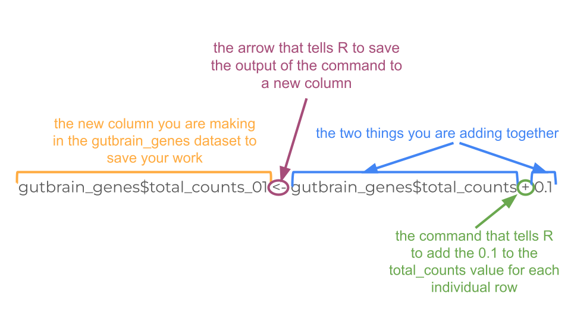
Remember you did this a couple steps ago when you make the “total_counts” column! You’ll do essentially the same thing, except you’ll tell R to add 0.1 to the “total_counts” column and save that value in a new column called “total_counts_01”.
gutbrain_genes$total_counts_01 <- gutbrain_genes$total_counts + 0.1Now just recreate your histogram using “total_count_01” instead of “total_counts”.
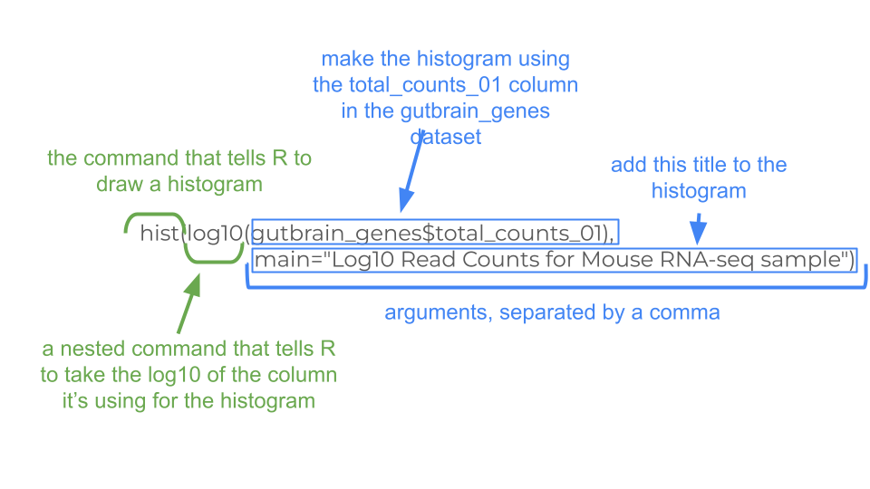
hist(log10(gutbrain_genes$total_counts_01), main="Transformed Log10 Read Counts for Mouse RNA-seq sample")There’s obviously a lot of variation in expression among genes!
Looking at read count for a single gene
You may want to look at the read count for a specific gene in your dataset. This can be done with the filter command. Let’s look at the read counts for the Reg3a gene, across all mice. Remember, this is the gene we looked up earlier in the MGI database. The Ensembl gene ID is “ENSMUSG00000079516”.
For filter, we need to tell R which dataset to use, and which column to search in.
filter(gutbrain_genes, GeneID == "ENSMUSG00000079516")Luckily, we chose a gene that is indeed expressed in the dataset! Making sure yours chosen genes are expressed will be important for our next step.
Visualize gene counts of multiple genes across groups
We can also look at the differential gene expression of a set of genes at once! This is usually done by creating a heatmap. In RNA-seq analyses, we usually put individual samples on the x-axis and normalized gene counts on the y-axis.
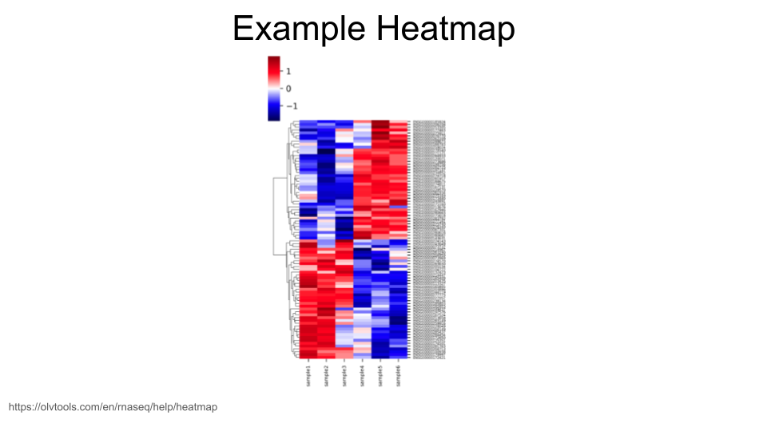
When creating heatmaps, we want to work with a dataset that includes normalized gene expression data for each gene. We loaded a dataset like this above that we called gutbrain_genes. If you don’t have an object in your environment called this, scroll back up to the “Loading the gene expression count data” section and run the code again.
The dataset you loaded has expression data for 55,421 different genes, which is too many to visualize. (You can try, but R will usually throw an error if you do.) In general, though, we are mostly interested in looking at the visualization of a particular group of genes, or a gene set.
Let’s say we have identified 6 mouse genes that have been linked to the development of motor neurons. We’re interested in whether these genes show differential gene expression between the striatum and the prefrontal cortex. We can use the filter command to pull out normalized gene expression data for just these six genes.
These are the genes (with gene IDs) that we’re including in our gene set:
- Sema3a: ENSMUSG00000028883
- Mapk8: ENSMUSG00000021936
- Nrcam: ENSMUSG00000020598
- Dlg4: ENSMUSG00000020886
- Slit1: ENSMUSG00000025020
- Creb1: ENSMUSG00000025958
First, create a vector that contains these gene IDs. (You can replace the gene IDs with the ones for your genes of interest, but make sure you use Ensembl gene IDs! They should all start with “ENSMUSG”.)
Each gene ID should have quotation marks around it, and the different IDs should be separated using a comma.
gene_set <- c("ENSMUSG00000028883", "ENSMUSG00000021936", "ENSMUSG00000020598", "ENSMUSG00000020886", "ENSMUSG00000025020", "ENSMUSG00000025958")Now we simply filter the gutbrain_genes dataset so that we only keep the rows for the gene IDs in our gene set. Remember, we want to use the filter command. The combination of filter and %in% tells R to only keep those rows in the gutbrain_genes dataset if the gene ID is also found in our gene list we made earlier.
gutbrain_motor <- filter(gutbrain_genes, gutbrain_genes$GeneID %in% gene_set)Now we have our data subsetted the way we want, but we aren’t quite ready for the heatmap yet. In order for R to make a heatmap from our data, we do have to reformat things a little bit. Right now our data is in “tibble” format, but we want it in a numerical “matrix” format. We can’t switch directly from “tibble” to “matrix” (because the GeneID column is character data, not numerical data). Instead, let’s first convert from “tibble” to a format called “dataframe”.
gutbrain_motor <- as.data.frame(gutbrain_motor)To our eyes, not much has changed in the format, but it’s very different to R. Now we’re going to tell R to name the rows based on the “GeneID” column.
We are also going to delete the current “GeneID” column because we no longer need it, as well as the two columns we created earlier, “total_counts” and “total_counts_01”.
rownames(gutbrain_motor) <- gutbrain_motor$GeneID
gutbrain_motor$GeneID <- NULL
gutbrain_motor$total_counts <- NULL
gutbrain_motor$total_counts_01 <- NULLGreat! Now we can change the format of gutbrain_motor_controls dataset to “matrix” format in order to make our heatmap using the heatmap function.
gutbrain_motor <- as.matrix(gutbrain_motor)
heatmap(gutbrain_motor)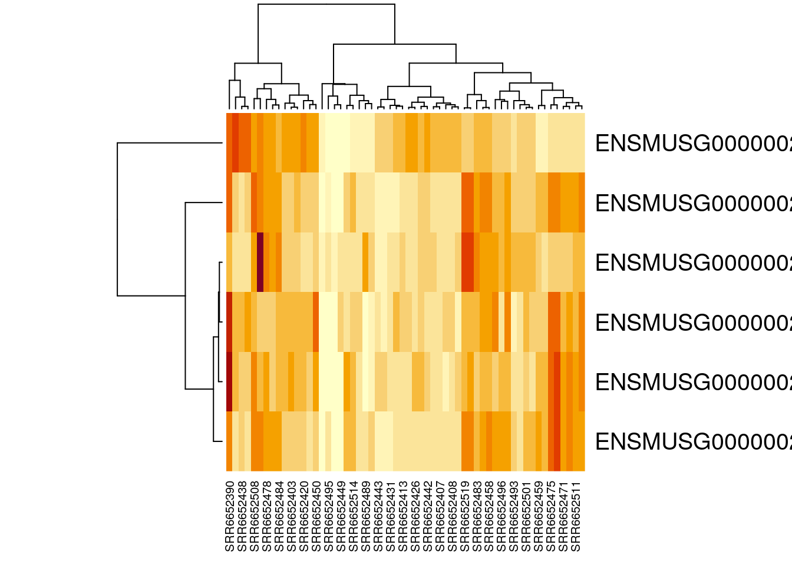
Congratulations, you have just created a heatmap! The map itself is a series of stacked boxes. Each square within the heatmap represents the gene count for a particular gene in a particular sample. By default squares with the high gene counts are colored dark red. Squares with the lowest gene counts are colored pale yellow.
By default, R will order the samples (what we have on the x-axis across the bottom) in a way that clusters similar samples together. This is why we see columns of lighter yellow in the center of the heatmap, with darker orange and red columns on the edges. This suggests that there are groups of samples that have higher gene expression, but it’s hard to tell right now if these groups correspond to the prefrontal cortex vs striatum (which is what we’re interested in). It would be helpful if we could tell R to group based on prefrontal cortex vs striatum instead.
Luckily, this is possible! Our dataset is already in the order we want (with all the prefrontal cortex samples first). We can just tell R to use the default ordering of the dataset instead of clustering and rearranging the x-axis.
How are the samples in my dataset ordered?
When these datasets were made, the samples were ordered in a specific way so that you could easily make your heatmaps.
Only control-type mouse samples (contains both prefrontal cortex and striatum; two brain regions, only one mouse type): prefrontal cortex samples first, then the striatum samples
Only ASD-type mouse samples (contains both prefrontal cortex and striatum; two brain regions, only one mouse type): prefrontal cortex samples first, then the striatum samples
Only prefrontal cortex samples (contains both ASD-type and control-type mice; two mice types, only one brain region): ASD-type samples first, then control-type samples
Only striatum samples (contains both ASD-type and control-type mice; two mice types, only one brain region): ASD-type samples first, then control-type samples
But if you ever want to verify the details for a particular sample, you can check out the metadata! This is the data (or information) about each of the samples. The metadata is stored at <mouse_gutbrain_metadata.csv>. You can load it into R using read_csv.
heatmap(gutbrain_motor, Colv = NA, Rowv = NA)Perfect! Now we can easily see that four of our six genes seem to be expressed in lower levels by the samples on the right side of the heatmap (the striatum samples), while one gene is expressed in higher levels by the striatum. This is definitely intriguing!
Notice that not all the striatum samples have the same expression for each gene. This is normal variation and could be due to actual difference in gene expression levels or be the result of laboratory methods.
Finally, we can customize the heatmap by changing the color scheme and adding a title. As as example, we’re going to tell R to make a spectrum of colors between white and blue, with white indicating the lowest expression and blue indicating the highest expression, and 16 possible color categories. (We are also adding a title to the heatmap.)
You can find an extensive list of all the colors available in R at https://www.datanovia.com/en/blog/awesome-list-of-657-r-color-names/. The general convention in biology is that the lightest colors on a heatmap indicate the lowest values.
heatmap(gutbrain_motor, Colv = NA, Rowv = NA, col = colorRampPalette(c("white", "darkblue"))(16), main = " Motor Neuron Gene List Expression")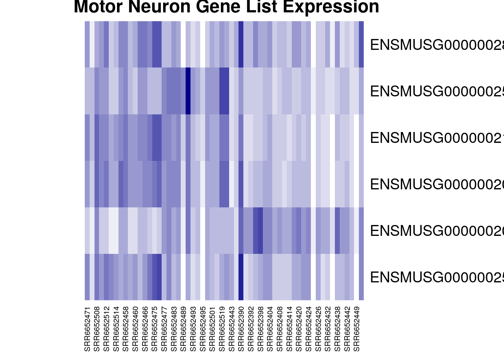
Finally, here’s all the code you just ran to create your heatmap in one place, in case you want to run it again.
#define your geneset and make a vector
gene_set <- c("ENSMUSG00000028883", "ENSMUSG00000021936", "ENSMUSG00000020598", "ENSMUSG00000020886", "ENSMUSG00000025020", "ENSMUSG00000025958")
#create new dataset that only include expression data for your geneset
gutbrain_motor <- filter(gutbrain_genes, gutbrain_genes$GeneID %in% gene_set)
#change format of dataset from "tibble" to "matrix"
gutbrain_motor <- as.data.frame(gutbrain_motor)
rownames(gutbrain_motor) <- gutbrain_motor$GeneID
gutbrain_motor$GeneID <- NULL
gutbrain_motor$total_counts <- NULL
gutbrain_motor <- as.matrix(gutbrain_motor)
#create heatmap with custom colors and title
heatmap(gutbrain_motor, Colv = NA, Rowv = NA, col = colorRampPalette(c("white", "darkblue"))(16), main = " Motor Neuron Gene List Expression")Exploring the differential expression data
Now let’s look a differential expression dataset, which compares gene expression counts between two groups. This dataset gives us an idea how the change in a gene’s expression might be associated with a disorder or a cell type. This is particularly useful for beginning to map the genetic drivers of a particular phenotype.
Package Install and Load
Before you start, make sure to load the tidyverse package! You should still have it installed from last time.
library(tidyverse)Loading the differential expression data
Let’s say you want to open the dataset that compares gene expression between ASD and control mice in both brain regions and call it asd_vs_c. We will do this using read_csv. Copy and paste this command into your console:
asd_vs_c <- read_csv("https://genomicseducation.org/data/mouse_gutbrain_de_autismVcontrol.csv")Rows: 55421 Columns: 7
── Column specification ────────────────────────────────────────────────────────
Delimiter: ","
chr (1): gene
dbl (6): baseMean, log2FoldChange, lfcSE, stat, pvalue, padj
ℹ Use `spec()` to retrieve the full column specification for this data.
ℹ Specify the column types or set `show_col_types = FALSE` to quiet this message.Here are the URLs for all the possible comparisons you can examine with this dataset:
Comparing gene expression between ASD and control mice
Both brain regions: https://genomicseducation.org/data/mouse_gutbrain_de_autismVcontrol.csv
Prefrontal cortex only: https://genomicseducation.org/data/mouse_gutbrain_de_autismVcontrol_in_prefrontalcortex.csv
Striatum only: https://genomicseducation.org/data/mouse_gutbrain_de_autismVcontrol_in_striatum.csv
Comparing gene expression between prefrontal cortex and striatum
All mice: https://genomicseducation.org/data/mouse_gutbrain_de_tissuetype.csv
Only ASD mice: https://genomicseducation.org/data/mouse_gutbrain_de_tissuetype_in_ASDmice.csv
Only control mice: https://genomicseducation.org/data/mouse_gutbrain_de_tissuetype_in_controlmice.csv
Which differential expression dataset should I use?
Even though this dataset is from a single study, there are still lots of options for independent research questions. You have the option to look at gene expression in control-type vs ASD-type mice, as well as gene expression in both striatum and prefrontal cortex. All the mice were male and sacrificed at the same age (45 days).
Additionally, you can look at gene expression in striatum vs prefrontal cortex in only ASD-type mice or only control-type mice. Likewise, you also have the option of looking at gene expression in ASD and control mice, focusing only on striatum or only on prefrontal cortex.
Are you mostly interested in how gene expression differs between the two brain regions? Are you interested in how neurons develop, or how groups of genes involved in movement might be expressed differently in two different regions? These sorts of questions are best to explore using striatum and prefrontal cortex comparisons.
Are you really curious about differential expression in Autism Spectrum Disorder-type mice compared to control-type mice? Are you curious about potential associations between gene expression differences in known neurodevelopmental genes? These questions and others can be explored using the ASD-type mice and control-type mice comparisons.
Ranking the genes by log2FoldChange
The log2FoldChange value gives us an idea of which genes show the greatest differential expression between the ASD mice and the control mice. It is a log-transformed ratio of how many gene transcripts were found in ASD-type mice compared to control-type mice. We take the log2 of this ratio (the fold change) because it makes interpretation easier. Genes with no difference in expression between groups have log2FoldChange values close to zero. Negative log2FoldChange values means a decreased expression (or, a downregulation in gene expression) in the experimental group versus the control group. Positive log2FoldChange values indicate genes that are upregulated, or have increased expression in the experimental group versus the control group.
We can arrange the table based on these values (going from smallest to largest) by copying the following code into your console:
asd_vs_c_ascending <- arrange(asd_vs_c, log2FoldChange)
head(asd_vs_c_ascending)# A tibble: 6 × 7
gene baseMean log2FoldChange lfcSE stat pvalue padj
<chr> <dbl> <dbl> <dbl> <dbl> <dbl> <dbl>
1 ENSMUSG00000089657 16.9 -25.5 1.81 -14.1 2.18e-45 7.29e-41
2 ENSMUSG00000102414 14.9 -25.4 1.89 -13.4 4.00e-41 3.81e-37
3 ENSMUSG00000083812 14.6 -25.4 1.80 -14.1 3.82e-45 7.29e-41
4 ENSMUSG00000074445 11.5 -25.0 1.89 -13.3 3.44e-40 2.62e-36
5 ENSMUSG00000094151 11.2 -25.0 1.79 -14.0 2.97e-44 3.77e-40
6 ENSMUSG00000053773 10.6 -24.9 1.99 -12.5 6.66e-36 4.23e-32The genes at the top of this table have the most negative log2FoldChange values and are downregulated in ASD-type mice.
We can use a similar command to look at the genes with the largest positive log2FoldChange. These are genes that are upregulated in ASD-type mice.
asd_vs_c_descending <- arrange(asd_vs_c, desc(log2FoldChange))
head(asd_vs_c_descending)# A tibble: 6 × 7
gene baseMean log2FoldChange lfcSE stat pvalue padj
<chr> <dbl> <dbl> <dbl> <dbl> <dbl> <dbl>
1 ENSMUSG00000102375 7.19 24.1 2.29 10.5 6.88e-26 2.91e-22
2 ENSMUSG00000104583 5.77 24.0 2.31 10.4 2.48e-25 9.47e-22
3 ENSMUSG00000042414 6.81 6.42 2.93 2.19 2.85e- 2 1.00e+ 0
4 ENSMUSG00000048763 6.33 6.32 2.30 2.75 6.04e- 3 1.00e+ 0
5 ENSMUSG00000117911 5.18 6.03 2.77 2.18 2.93e- 2 1.00e+ 0
6 ENSMUSG00000085421 4.74 5.90 2.93 2.01 4.42e- 2 1.00e+ 0When we’re interpreting the log2FoldChange, remember that you’ll need to do a little bit of math. A log2FoldChange value of 1 is a fold change value of 2 (2^1 = 2). Similarly, a log2FoldChange value of 4 is a fold change value of 8 (2^4 = 8)
If there is a two fold increase (fold change = 2, log2FoldChange = 1) between groups A and B, then the expression in group A is twice as big as the expression in group B.
If there is a two fold decrease (fold change = 0.5, log2FoldChange = -1) between groups A and B, then the expression in group A is half as big as the expression in group B (or B is twice as big as A).
Arranging dataset based on padj
Maybe you also want to arrange the genes by whether the estimated differential expression is significant. Instead of log2FoldChange, you will want to look at padj. You can use the arrange command to sort the results to put the smallest padj values first.
asd_vs_c_sorted <- arrange(asd_vs_c, padj)
head(asd_vs_c_sorted)# A tibble: 6 × 7
gene baseMean log2FoldChange lfcSE stat pvalue padj
<chr> <dbl> <dbl> <dbl> <dbl> <dbl> <dbl>
1 ENSMUSG00000089657 16.9 -25.5 1.81 -14.1 2.18e-45 7.29e-41
2 ENSMUSG00000083812 14.6 -25.4 1.80 -14.1 3.82e-45 7.29e-41
3 ENSMUSG00000094151 11.2 -25.0 1.79 -14.0 2.97e-44 3.77e-40
4 ENSMUSG00000102414 14.9 -25.4 1.89 -13.4 4.00e-41 3.81e-37
5 ENSMUSG00000074445 11.5 -25.0 1.89 -13.3 3.44e-40 2.62e-36
6 ENSMUSG00000053773 10.6 -24.9 1.99 -12.5 6.66e-36 4.23e-32Compare differential gene expression of a single across groups
It might be interesting to look at the expression of a gene across our two brain regions. To do this, we will first load the region-specific datasets.
asd_vs_c_prefrontal <- read_csv("https://genomicseducation.org/data/mouse_gutbrain_de_autismVcontrol_in_prefrontalcortex.csv")Rows: 55421 Columns: 7
── Column specification ────────────────────────────────────────────────────────
Delimiter: ","
chr (1): gene
dbl (6): baseMean, log2FoldChange, lfcSE, stat, pvalue, padj
ℹ Use `spec()` to retrieve the full column specification for this data.
ℹ Specify the column types or set `show_col_types = FALSE` to quiet this message.asd_vs_c_striatum <- read_csv("https://genomicseducation.org/data/mouse_gutbrain_de_autismVcontrol_in_striatum.csv")Rows: 55421 Columns: 7
── Column specification ────────────────────────────────────────────────────────
Delimiter: ","
chr (1): gene
dbl (6): baseMean, log2FoldChange, lfcSE, stat, pvalue, padj
ℹ Use `spec()` to retrieve the full column specification for this data.
ℹ Specify the column types or set `show_col_types = FALSE` to quiet this message.Then we’ll filter out the gene in which we’re interested from each object. Let’s take a look at gene ENSMUSG00000079516, which is the Reg3a gene we previously looked up on MGI.
reg3a_prefrontal <- filter(asd_vs_c_prefrontal, gene == "ENSMUSG00000079516")
reg3a_striatum <- filter(asd_vs_c_striatum, gene == "ENSMUSG00000079516")Finally, take a look at the differential expression of reg3a in each region.
In the prefrontal cortex:
reg3a_prefrontal# A tibble: 1 × 7
gene baseMean log2FoldChange lfcSE stat pvalue padj
<chr> <dbl> <dbl> <dbl> <dbl> <dbl> <dbl>
1 ENSMUSG00000079516 10.6 -22.6 2.11 -10.7 7.30e-27 2.63e-23In the striatum:
reg3a_striatum# A tibble: 1 × 7
gene baseMean log2FoldChange lfcSE stat pvalue padj
<chr> <dbl> <dbl> <dbl> <dbl> <dbl> <dbl>
1 ENSMUSG00000079516 0.371 2.27 2.96 0.765 0.444 NACreating a volcano plot to visualize differential expression of multiple genes
A volcano plot is a great way to visualize differential gene expression between two datasets. These types of plots have log2FoldChange on the x-axis and a log transformed padj on the y-axis.
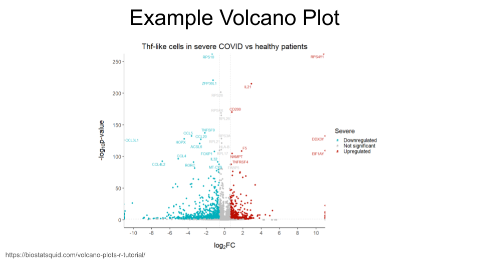
We will first need to do a log transformation of the padj variable. We do this in order to spread our values out along the y-axis - otherwise, all the dots that represent genes will be too scrunched together.
asd_vs_c$padj_trans <- -log10(asd_vs_c$padj)Now, we just create a scatterplot. The code for this is kind of complicated, so you will want to paste the code below into your console.
Here’s the code for your basic volcano plot. data tells R what data to use, x tells R what the x-axis values should be, and y tells R what the y-axis values should be. Notice that we can just use the column names for x and y!
ggplot(data = asd_vs_c, aes(x = log2FoldChange, y = padj_trans)) +
geom_point()Warning: Removed 17318 rows containing missing values or values outside the scale range
(`geom_point()`).
We can also color code the genes (points) which are significantly upregulated or downregulated. In order to do this, we will need to create a new column in our dataset that identifies whether a gene is upregulated in ASD-type mice, downregulated in ASD-type mice, or has the same regulation in ASD-type mice compared to control-type mice.
In this new column, we can decide the thresholds that a log2FoldChange value must meet in order to be considered upregulated or downregulated. We will consider genes to be upregulated if the log2fold change is greater than 0.6 and downregulated if it is less than -0.6. You can change these thresholds to whatever makes sense for you.
log2foldchange is just a representation of a ratio, so the sign indicates the direction of regulation. It’s important to remember which group is your comparison group!
For example, if you are look at regulation in group A compared to group B, you might have a log2foldchange value of 1 (indicating the gene is expressed twice as much in A as it is in B).
However, if you are looking at regulation in group B compared to group A, the log2foldchange value will be -1 (because the gene is expressed half as much in B as it is in A).
The comparison group matters with ratios!
We are also setting a significant p-value as less than 0.05 (but you can also change this based on your best judgment).
We start by creating a new column called diffexpressed and setting everything to “NO” (as in “no expression differences between ASD-type and control-type mice”). We then specify the genes for which this column should be changed to “UP” or “DOWN” (based on log2FoldChange and padj).
To recap: A gene is labeled “UP” if its log2FoldChange value is greater than 0.6 and its adjusted p-value is less than 0.05.
A gene is labeled “DOWN” if its log2FoldChange value is less than -0.6 and its adjusted p-value is less than 0.05.
asd_vs_c$diffexpressed <- "NO"
asd_vs_c$diffexpressed[asd_vs_c$log2FoldChange > 0.6 & asd_vs_c$padj < 0.05] <- "UP"
asd_vs_c$diffexpressed[asd_vs_c$log2FoldChange < -0.6 & asd_vs_c$padj < 0.05] <- "DOWN"
head(asd_vs_c)# A tibble: 6 × 9
gene baseMean log2FoldChange lfcSE stat pvalue padj padj_trans
<chr> <dbl> <dbl> <dbl> <dbl> <dbl> <dbl> <dbl>
1 ENSMUSG00000… 16.9 -25.5 1.81 -14.1 2.18e-45 7.29e-41 40.1
2 ENSMUSG00000… 14.6 -25.4 1.80 -14.1 3.82e-45 7.29e-41 40.1
3 ENSMUSG00000… 11.2 -25.0 1.79 -14.0 2.97e-44 3.77e-40 39.4
4 ENSMUSG00000… 14.9 -25.4 1.89 -13.4 4.00e-41 3.81e-37 36.4
5 ENSMUSG00000… 11.5 -25.0 1.89 -13.3 3.44e-40 2.62e-36 35.6
6 ENSMUSG00000… 10.6 -24.9 1.99 -12.5 6.66e-36 4.23e-32 31.4
# ℹ 1 more variable: diffexpressed <chr>Okay! We can now add some color to the volcano plot we made earlier. We do this by adding a line to our code that tells R to color the data points based on the diffexpressed column (col = diffexpressed). We also add a line about the colors we want to use (scale_color_manual). In this case, we have chosen to make the points for downregulated genes turquoise and the points for upregulated genes gold. The additional command labels just creates the labels on the legend.
You can find an extensive list of all the colors available in R at https://www.datanovia.com/en/blog/awesome-list-of-657-r-color-names/.
ggplot(data = asd_vs_c, aes(x = log2FoldChange, y = padj_trans, col = diffexpressed)) +
geom_point() +
scale_color_manual(values = c("turquoise", "grey", "gold"),
labels = c("Downregulated", "Not significant", "Upregulated")) Warning: Removed 17318 rows containing missing values or values outside the scale range
(`geom_point()`).
We can also label genes of interest in our plot. Let’s label the Reg3a gene (the same one we looked up in the MGI database), as well as Pcdh12 (or protocadherin 12). The two gene IDs we need to know are ENSMUSG00000079516 and ENSMUSG00000024440.
We will create another new column in our dataset. We will then tell R In this new column, the genes in our list (Reg3a and Pcdh12) are named, which everything else will have a missing name. When we remake the volcano plot, R will only label those points that do not have missing names in the gene_label column.
This is going to require a little bit of R trickery and something called a “case_when” statement.
In R, an “case_when” statement tells R to do something only when a condition is true. In our command, R is going through the asd_vs_c row by row. For each row, we are telling R to first check whether the geneID of that row is “ENSMUSG00000079516”. If it is, then R will fill in the gene_label column with the gene symbol “Reg3a”. If it is not, R moves onto the next part of our command.
When R moves onto this second command, it’s now checking to see if the geneID for the row is “ENSMUSG00000024440”. If it is, then R fills in the gene_label column with the gene symbol “Pcdh12”. If it is not, R moves to the third command in the case_when statement. The final line tells R to fill in the gene_label column with “NA” for any row that didn’t match the previous commands. This will tell R in the future that the information for this column is missing.
asd_vs_c$gene_label <- case_when(
asd_vs_c$gene == "ENSMUSG00000079516" ~ "Reg3a",
asd_vs_c$gene == "ENSMUSG00000024440" ~ "Pcdh12",
TRUE ~ NA_character_
)Great! You can check to see what the new column gene_label looks like by using the head command.
head(asd_vs_c)# A tibble: 6 × 10
gene baseMean log2FoldChange lfcSE stat pvalue padj padj_trans
<chr> <dbl> <dbl> <dbl> <dbl> <dbl> <dbl> <dbl>
1 ENSMUSG00000… 16.9 -25.5 1.81 -14.1 2.18e-45 7.29e-41 40.1
2 ENSMUSG00000… 14.6 -25.4 1.80 -14.1 3.82e-45 7.29e-41 40.1
3 ENSMUSG00000… 11.2 -25.0 1.79 -14.0 2.97e-44 3.77e-40 39.4
4 ENSMUSG00000… 14.9 -25.4 1.89 -13.4 4.00e-41 3.81e-37 36.4
5 ENSMUSG00000… 11.5 -25.0 1.89 -13.3 3.44e-40 2.62e-36 35.6
6 ENSMUSG00000… 10.6 -24.9 1.99 -12.5 6.66e-36 4.23e-32 31.4
# ℹ 2 more variables: diffexpressed <chr>, gene_label <chr>Now we just need to remake our volcano plot and add some to code that tells R to label the points we’re interested in. The command label = gene_label goes right after the code that tells R how to color the points. We also need to add something at the end of our code that tells R to put the labels on top of the plot that we’ve made. That’s the + geom_text_repel(max.overlaps = Inf) command.
In order for this command to work, we do need to install and load a new library called ggrepel.
install.packages('ggrepel')Installing package into '/usr/local/lib/R/site-library'
(as 'lib' is unspecified)library(ggrepel)Excellent. Now that we have installed and loaded this package (which you only need to do once for each R session!), we can run the code to create the volcano plot. Remember, we added label = gene_label to tell R to add labels to the points, and geom_text_repel(max.overlaps = Inf) to tell R to put the labels on top of the plot so we can see them.
ggplot(data = asd_vs_c, aes(x = log2FoldChange, y = padj_trans, col = diffexpressed, label = gene_label)) +
geom_point() +
scale_color_manual(values = c("turquoise", "grey", "gold"),
labels = c("Downregulated", "Not significant", "Upregulated")) +
geom_text_repel(max.overlaps = Inf)Warning: Removed 17318 rows containing missing values or values outside the scale range
(`geom_point()`).Warning: Removed 55419 rows containing missing values or values outside the scale range
(`geom_text_repel()`).
You may want to add a title to your plot. This can be done with the ggtitle command.
ggplot(data = asd_vs_c, aes(x = log2FoldChange, y = padj_trans, col = diffexpressed, label = gene_label)) +
geom_point() +
scale_color_manual(values = c("turquoise", "grey", "gold"),
labels = c("Downregulated", "Not significant", "Upregulated")) +
geom_text_repel(max.overlaps = Inf) +
ggtitle("Differential Expression in Mouse Prefrontal Cortex")Warning: Removed 17318 rows containing missing values or values outside the scale range
(`geom_point()`).Warning: Removed 55419 rows containing missing values or values outside the scale range
(`geom_text_repel()`).
Here’s all the code we used to build a volcano plot in one place so that you can easily run it again (and make modifications).
#log transform the padj values so the y-axis is formatted for plotting
asd_vs_c$padj_trans <- -log10(asd_vs_c$padj)
#Create the diffexpressed column so that we can color the upregulated and downregulated genes on the plot
asd_vs_c$diffexpressed <- "NO"
asd_vs_c$diffexpressed[asd_vs_c$log2FoldChange > 0.6 & asd_vs_c$padj < 0.05] <- "UP"
asd_vs_c$diffexpressed[asd_vs_c$log2FoldChange < -0.6 & asd_vs_c$padj < 0.05] <- "DOWN"
#Create the gene_label column so that we can label individual points
asd_vs_c$gene_label <- case_when(
asd_vs_c$gene == "ENSMUSG00000079516" ~ "Reg3a",
asd_vs_c$gene == "ENSMUSG00000024440" ~ "Pcdh12",
TRUE ~ NA_character_
)
#Make the final plot
ggplot(data = asd_vs_c, aes(x = log2FoldChange, y = padj_trans, col = diffexpressed, label = gene_label)) +
geom_point() +
scale_color_manual(values = c("turquoise", "grey", "gold"),
labels = c("Downregulated", "Not significant", "Upregulated")) +
geom_text_repel(max.overlaps = Inf) +
ggtitle("Differential Expression in Mouse Prefrontal Cortex")Warning: Removed 17318 rows containing missing values or values outside the scale range
(`geom_point()`).Warning: Removed 55419 rows containing missing values or values outside the scale range
(`geom_text_repel()`).
Running a gene set analysis
You can use the special command runClusterProfiler to figure out the types of processes genes on your gene list are involved in. You can also create a dotplot to visualize your results. (NOTE: this is only possible if you are using the C-MOOR environment in SciServer.)
You created a gene list in the Visualize gene counts of multiple genes across groups section above. The code from this section is repeated below in case you need to run it again.
gene_set <- c("ENSMUSG00000028883", "ENSMUSG00000021936", "ENSMUSG00000020598", "ENSMUSG00000020886", "ENSMUSG00000025020", "ENSMUSG00000025958")Then we can create a subset of the asd_vs_c dataset by filtering out any genes that aren’t on our gene list. Remember, we do this using filter and %in%.
asd_vs_c_motor <- filter(asd_vs_c, asd_vs_c$gene %in% gene_set)Finally, create your cluster profile with the runClusterProfiler and dotplot commands.
asd_vs_c_clusters <- runClusterProfiler(asd_vs_c_sig)
dotplot(asd_vs_c_clusters, showCategory=34, title="asd vs control in prefrontal cortex", font.size=10, label_format = 50)References
[1]
G. Sharon et al., “Human gut microbiota from autism spectrum disorder promote behavioral symptoms in mice,” Cell, vol. 177, no. 6, pp. 1600–1618, 2019, Available: https://pubmed.ncbi.nlm.nih.gov/31150625/
[2]
C. Hu, “Of mice and model organisms.” 2024. Available: https://www.cshl.edu/of-mice-and-model-organisms/
[3]
Foundation for Biomedical Research, “Nobel prizes.” 2025. Available: https://fbresearch.org/medical-advances/nobel-prizes/